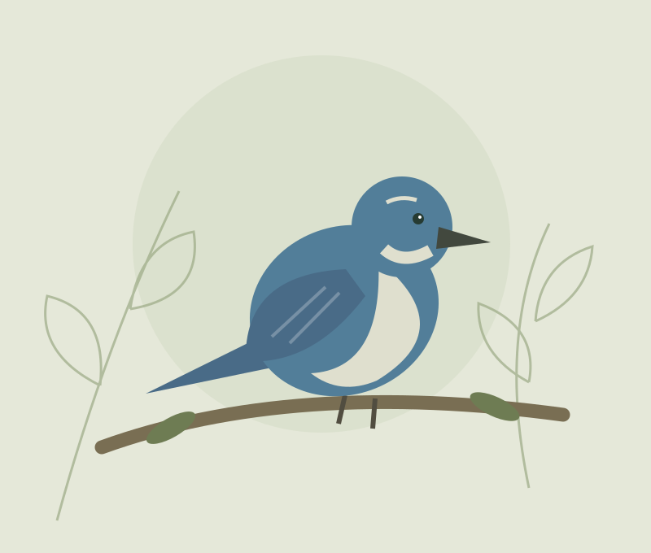

LOOK UP. LISTEN CLOSELY.
A little curiosity
takes flight.
Discover birds around you. Identify what you find and create a badge to share your discovery!
No account. Just you and the birds.

MEET YOUR FEATHERED NEIGHBORSCalifornia Scrub-JayAphelocoma californicaTemporary illustration · photograph coming later
01
Notice a birdOut on a trail. Outside your window.
02
Find your speciesBrowse here or get help from Merlin.
03
Make it a discoveryCreate a badge to save and share.
YOUR DISCOVERY STARTS HERE
Who did you find?
Choose a possible match. A bird you heard counts, too.
Loading the field guide…
A LITTLE MOMENT, WORTH KEEPING
Your discovery,
ready to take flight.
Seen or heard, every encounter is a reason to be curious.
This is a possible identification, not a verified record.
A 1080 × 1080 PNG. Sharing options depend on your device and installed apps.